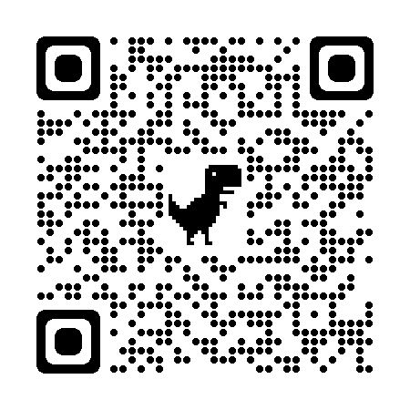
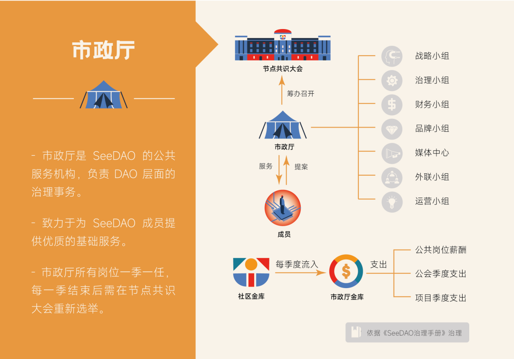
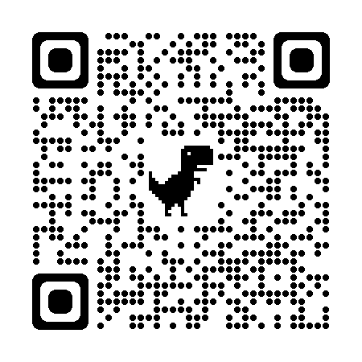

改革先锋号 | SeeDAO 第二届市政厅竞选招募令
作者: SeeDAO

市政厅是 SeeDAO 负责内政、外交、运营的综合性公共服务机构。首届市政在经过3个月的运转后，在 26 个岗位工作的 20 位 SeeDAO 成员即将卸任。即将进行的第二届节点共识大会（2.24-2.26 ）将会产生新一届的市政厅成员，持续为大家提供公共服务。竞选报名将于2023年2月21日晚24点截至，请感兴趣的伙伴及时扫码报名

结合首届市政厅的经验，在治理/战略小组的提议下，市政厅正在发生如下变化：
一、人员精简
首届市政厅包含 7 大部门、26 个岗位，大家通过联席会议展开协作。第二届市政厅将部门根据业务流，汇总为 3 条核心业务线与 11 个岗位，每条业务线有一名负责人进行总统筹。- 内部治理小组：负责人、总治理工程师、财务官、Super Mod

二、从公务员到创业者
首届市政厅中，我们会强调岗位的公共服务属性，并且清晰的划分了每一个岗位的职责与交付物。这些都在影响大家会认为市政厅岗位更像在招募优秀的公务员。而实际在业务中，由于SeeDAO 正处在发展、扩张期，在持续变化的市场与业务环境之下，抱着公务员心态进入市政厅的成员往往会经历对于目标、方向的迷茫。而更加具备创业者精神的成员，往往会主动寻找新的方向，做出在原定职责外确具有建设性的成果。因此新的一届市政厅，具备创业者精神的竞选者将有机会获得更多成员的选票。三、普遍提高的薪资和工作时长
首届市政厅各岗位建议每周工作 15-24h ，月薪 36000-57000 点积分，最多可以申请将 50% 兑换为U（战略小组除外）第二届市政厅普通岗位建议每周工作 28h，薪资 93333 点积分，最多可选择 1000U+60000积分。负责人岗位每周工作 58h，月薪 140000 积分，不可兑换 U。四、更加明晰的定位与业务流
新一届市政厅将在精简人员的同时，进一步确保每个岗位基于正在运转、有明确需求的业务流而设定。而整个SeeDAO 的定位也在过去三个月的持续探讨中逐步明晰。
我们在开发数字城邦的公共物品，为数字游民与加密无产者提供公共服务。我们正在通过教育、孵化、社交活动、全球据点、内容创作等项目来服务城邦中的公民，并持续引领更多 web2 的用户踏上新大陆、成为与我们同行的共建人。——————相信本届市政厅，大家在业务、目标更加明确之后，将爆发出令人惊叹的创造力！你愿意与我们共建这样一座数字城邦，并加入本届市政厅吗？如若有意，请务必在 2023年2月21日晚24点前完成你的报名！
竞选流程：

- 内部治理小组+技术小组竞选演讲：2月22日晚19-22点